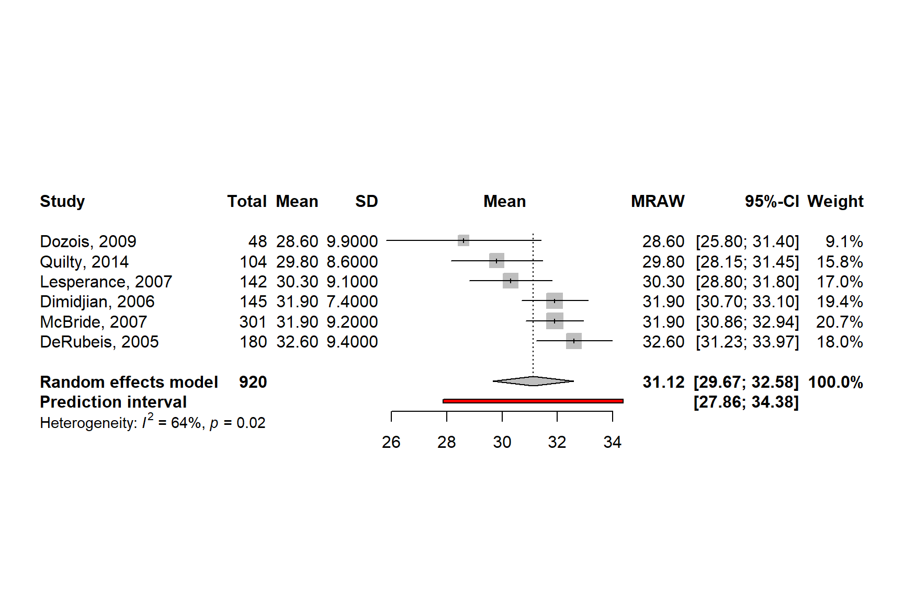
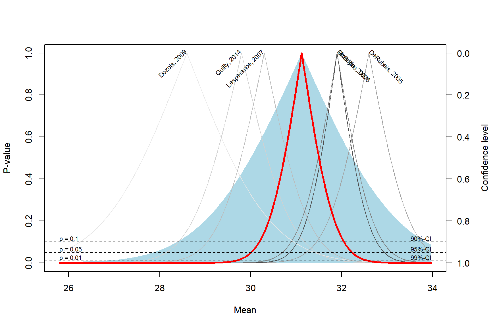
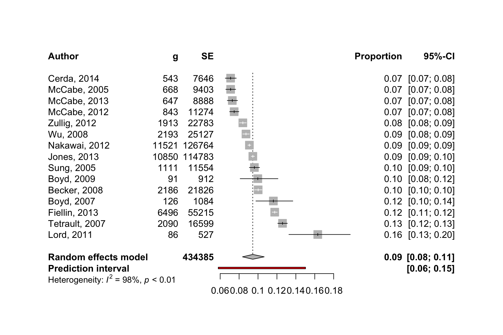

49 Metaanalysen
Version vom June 03, 2023 um 20:11:40

“The only way to test a hypothesis is to look for all the information that disagrees with it.” — Karl Popper
Der folgende Text ist ein Lehrtext für Studierende. Es handelt sich keinesfalls um eine textliche Beratung für Metaanalysen in einem wissenschaftlichen Reviewprozess. Alle Beispiel sind im Zweifel an den Haaren herbeigezogen und dienen nur der Veranschaulichung möglicher Sachverhalte.
In diesem Kapitel wollen wir uns einmal die Metaanalyse oder indirekte Vergleiche anschauen. Wir halten das Kapitel bewusst kurz, denn wenn wir das Thema ausführlich behandeln wollten, dann wäre es ein eigenes Buch. Das wollen wir aber nicht, es reicht, wenn wir hier die Grundlagen verstehen. Das heißt vor allem, dass wir die Daten so erstellt kriegen, dass wir selber eine Marktanalyse rechnen können. Der Fokus ist hier auf den Agrarwissenschaften, aber die Beispiele wurden von mir aus dem “Doing Meta-Analysis with R: A Hands-On Guide” von Harrer u. a. (2021) adaptiert und in einen neuen Kontext gesetzt. Wenn du wirklich eine Metaanalyse rechnen willst, dann musst du nochmal durch das Buch von Harrer u. a. (2021) oder den Artikel von Balduzzi, Rücker, und Schwarzer (2019) durcharbeiten.

Das ist hier natürlich eine Metanalyse für Arme. Wie man es richtig umfangreich macht, findest du in einem sehr gutem und umfangreichen Tutorial zu Doing Meta-Analysis in R: A Hands-on Guide
Noch als kleine Randbemerkung, wenn du aus den medizinischen Bereich kommst, dann solltest du die Leitlinien in den Allgemeinen Methoden des Institut für Qualität und Wirtschaftlichkeit im Gesundheitswesen (IQWiG) zu den Metaanalysen oder indirketen Vergleichen kennen. Wir können hier leider nicht in die Tiefe der Leitlinien abtauchen.
49.1 Genutzte R Pakete
Wir wollen folgende R Pakete in diesem Kapitel nutzen.
Am Ende des Kapitels findest du nochmal den gesamten R Code in einem Rutsch zum selber durchführen oder aber kopieren.
49.2 Daten
In diesem Kapitel nutzen wir
drymatter_tbl <- read_excel("data/meta/drymatter_iron_studies.xlsx") Schauen wir uns nochmal einen Ausschnitt der Daten in der
| author | n | mean | sd |
|---|---|---|---|
| DeRubeis, 2005 | 180 | 32.6 | 9.4 |
| Dimidjian, 2006 | 145 | 31.9 | 7.4 |
| Dozois, 2009 | 48 | 28.6 | 9.9 |
| Lesperance, 2007 | 142 | 30.3 | 9.1 |
| McBride, 2007 | 301 | 31.9 | 9.2 |
| Quilty, 2014 | 104 | 29.8 | 8.6 |
sunflower_tbl <- read_excel("data/meta/infected_sunflower_studies.xlsx") Schauen wir uns nochmal einen Ausschnitt der Daten in der
| author | event | n |
|---|---|---|
| Becker, 2008 | 2186 | 21826 |
| Boyd, 2009 | 91 | 912 |
| Boyd, 2007 | 126 | 1084 |
| Cerda, 2014 | 543 | 7646 |
| Fiellin, 2013 | 6496 | 55215 |
| Jones, 2013 | 10850 | 114783 |
| Lord, 2011 | 86 | 527 |
| McCabe, 2005 | 668 | 9403 |
| McCabe, 2012 | 843 | 11274 |
| McCabe, 2013 | 647 | 8888 |
| Nakawai, 2012 | 11521 | 126764 |
| Sung, 2005 | 1111 | 11554 |
| Tetrault, 2007 | 2090 | 16599 |
| Wu, 2008 | 2193 | 25127 |
| Zullig, 2012 | 1913 | 22783 |
49.3 Das Modell mit fixen Effekten
Die Idee hinter dem Modell mit fixen Effekten (eng. fixed effect) ist, dass die beobachteten Effektgrößen von Studie zu Studie variieren können, was aber nur auf den Stichprobenfehler zurückzuführen ist. In Wirklichkeit sind die wahren Effektgrößen alle gleich: die Effekte sind fix. Aus diesem Grund wird das Modell mit festen Effekten manchmal auch als Modell mit “gleichen Effekten” oder “gemeinsamen Effekten” bezeichnet.
Das Modell der festen Effekte geht davon aus, dass alle unsere Studien Teil einer homogenen Population sind und dass die einzige Ursache für Unterschiede in den beobachteten Effekten der Stichprobenfehler der Studien ist. Wenn wir die Effektgröße jeder Studie ohne Stichprobenfehler berechnen würden, wären alle wahren Effektgrößen absolut gleich.
49.4 Das Modell mit zufälligen Effekten
Das Modell der zufälligen Effekte (eng. random effect) geht davon aus, dass es nicht nur eine wahre Effektgröße gibt, sondern eine Verteilung der wahren Effektgrößen. Das Ziel des Modells mit zufälligen Effekten ist es daher nicht, die eine wahre Effektgröße aller Studien zu schätzen, sondern den Mittelwert der Verteilung der wahren Effekte.
In der Praxis ist es sehr ungewöhnlich, eine Auswahl von Studien zu finden, die vollkommen homogen ist. Dies gilt selbst dann, wenn wir uns an bewährte Verfahren halten und versuchen, den Umfang unserer Analyse so präzise wie möglich zu gestalten.
In vielen Bereichen, einschließlich der Medizin und der Sozialwissenschaften, ist es daher üblich, immer ein Modell mit zufälligen Effekten zu verwenden, da ein gewisses Maß an Heterogenität zwischen den Studien praktisch immer zu erwarten ist. Ein Modell mit festen Effekten kann nur dann verwendet werden, wenn keine Heterogenität zwischen den Studien festgestellt werden konnte und wenn wir sehr gute Gründe für die Annahme haben, dass der wahre Effekt fest ist. Dies kann zum Beispiel der Fall sein, wenn nur exakte Replikationen einer Studie betrachtet werden oder wenn wir Teilmengen einer großen Studie meta-analysieren. Natürlich ist dies nur selten der Fall, und Anwendungen des Modells mit festem Effekt “in freier Wildbahn” sind eher selten.
49.5 Indirekte Vergleiche in R
drymatter_iron_tbl <- read_excel("data/meta/drymatter_iron_studies.xlsx")
sunflower_mold_tbl <- read_excel("data/meta/infected_sunflower_studies.xlsx")m.mean <- metamean(n = n,
mean = mean,
sd = sd,
studlab = author,
data = drymatter_iron_tbl,
sm = "MRAW",
fixed = FALSE,
random = TRUE,
method.tau = "REML",
hakn = TRUE,
title = "Ertrag von Weizen nach Eisenbehandlung")
summary(m.mean)Review: Ertrag von Weizen nach Eisenbehandlung
mean 95%-CI %W(random)
DeRubeis, 2005 32.6000 [31.2268; 33.9732] 18.0
Dimidjian, 2006 31.9000 [30.6955; 33.1045] 19.4
Dozois, 2009 28.6000 [25.7993; 31.4007] 9.1
Lesperance, 2007 30.3000 [28.8033; 31.7967] 17.0
McBride, 2007 31.9000 [30.8607; 32.9393] 20.7
Quilty, 2014 29.8000 [28.1472; 31.4528] 15.8
Number of studies combined: k = 6
Number of observations: o = 920
mean 95%-CI
Random effects model 31.1221 [29.6656; 32.5786]
Quantifying heterogeneity:
tau^2 = 1.0937 [0.0603; 12.9913]; tau = 1.0458 [0.2456; 3.6043]
I^2 = 64.3% [13.8%; 85.2%]; H = 1.67 [1.08; 2.60]
Test of heterogeneity:
Q d.f. p-value
14.00 5 0.0156
Details on meta-analytical method:
- Inverse variance method
- Restricted maximum-likelihood estimator for tau^2
- Q-Profile method for confidence interval of tau^2 and tau
- Hartung-Knapp (HK) adjustment for random effects model (df = 5)
- Untransformed (raw) meansforest.meta(m.mean,
sortvar = TE,
prediction = TRUE,
print.tau2 = FALSE,
leftlabs = c("Author", "g", "SE"))
drapery(m.mean,
labels = "studlab",
type = "pval",
legend = FALSE)
m.prop <- metaprop(event = event,
n = n,
studlab = author,
data = sunflower_mold_tbl,
method = "GLMM",
sm = "PLOGIT",
fixed = FALSE,
random = TRUE,
hakn = TRUE,
title = "Befall von Sonnenblumen mit Mehltau")
summary(m.prop)Review: Befall von Sonnenblumen mit Mehltau
proportion 95%-CI
Becker, 2008 0.1002 [0.0962; 0.1042]
Boyd, 2009 0.0998 [0.0811; 0.1211]
Boyd, 2007 0.1162 [0.0978; 0.1368]
Cerda, 2014 0.0710 [0.0654; 0.0770]
Fiellin, 2013 0.1176 [0.1150; 0.1204]
Jones, 2013 0.0945 [0.0928; 0.0962]
Lord, 2011 0.1632 [0.1327; 0.1976]
McCabe, 2005 0.0710 [0.0659; 0.0764]
McCabe, 2012 0.0748 [0.0700; 0.0798]
McCabe, 2013 0.0728 [0.0675; 0.0784]
Nakawai, 2012 0.0909 [0.0893; 0.0925]
Sung, 2005 0.0962 [0.0908; 0.1017]
Tetrault, 2007 0.1259 [0.1209; 0.1311]
Wu, 2008 0.0873 [0.0838; 0.0908]
Zullig, 2012 0.0840 [0.0804; 0.0876]
Number of studies combined: k = 15
Number of observations: o = 434385
Number of events: e = 41364
proportion 95%-CI
Random effects model 0.0944 [0.0836; 0.1066]
Quantifying heterogeneity:
tau^2 = 0.0558; tau = 0.2362; I^2 = 98.3% [97.9%; 98.7%]; H = 7.74 [6.92; 8.66]
Test of heterogeneity:
Q d.f. p-value Test
838.21 14 < 0.0001 Wald-type
826.87 14 < 0.0001 Likelihood-Ratio
Details on meta-analytical method:
- Random intercept logistic regression model
- Maximum-likelihood estimator for tau^2
- Random effects confidence interval based on t-distribution (df = 14)
- Logit transformation
- Clopper-Pearson confidence interval for individual studiesforest.meta(m.prop,
sortvar = TE,
prediction = TRUE,
print.tau2 = FALSE,
leftlabs = c("Author", "g", "SE"))